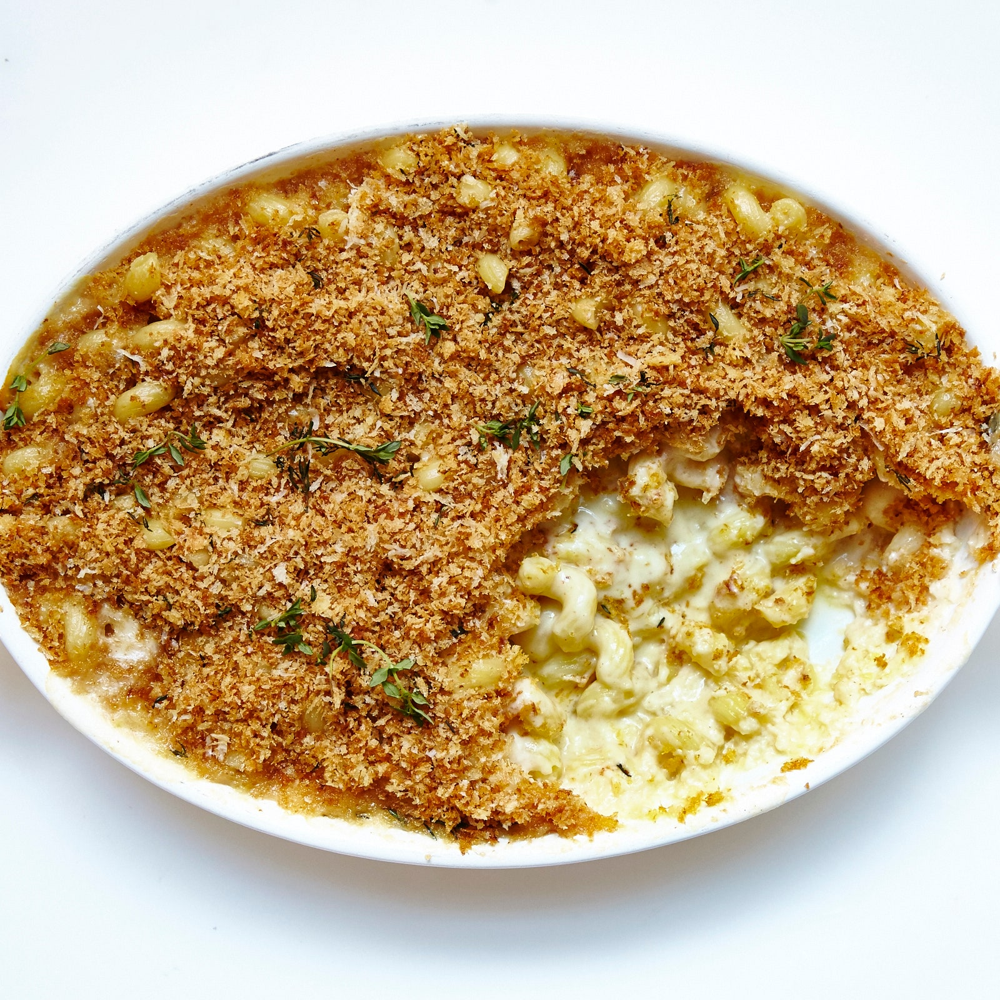

MAC & CHEESE

Prepare to have your socks knocked off by the mac & chesse recipe.
Don’t be alarmed if the sauce looks thin at first: It will continue to thicken as it bakes with the noodles.
This recipe also easily doubles—because one can't have too much mac 'n' cheese.
This is part of BA's Best, a collection of our essential recipes.
Ingredients
4 Servings
- 4 tablespoons unsalted butter, divided
- ¾ cup panko (Japanese breadcrumbs)
- ¼ ounce Parmesan, finely grated (about ¼ cup)
- 2 teaspoons fresh thyme leaves
- 1 teaspoon kosher salt, divided, plus more
- 8 ounces cavatappi or other short curly pasta
- 2½ cups whole milk
- ½ small onion, grated
- 1 garlic clove, finely grated
- 2 tablespoons all-purpose flour
- 4 ounces Fontina cheese, grated (about 1 cup)
- 4 ounces Gruyère, grated (about 1 cup)
- 4 ounces sharp white cheddar, grated (about 1 cup)
- ½ teaspoon English mustard powder (such as Colman’s)
- Pinch of cayenne pepper
Steps
- Preheat oven to 350°. Melt 2 Tbsp. butter in a medium skillet over medium heat. Add panko and cook, stirring, until crumbs are golden brown, 6–8 minutes (make sure to get them toasty brown; they won’t darken much during baking). Transfer to a small bowl and toss with Parmesan, thyme leaves, and ¼ tsp. salt.
- Cook pasta in a large pot of boiling salted water, stirring occasionally, until al dente (the noodles will continue to cook in the cheese sauce, so take them out a minute or two before you think they’re actually done). Drain pasta; let cool while you make the sauce.
- Bring milk to a bare simmer in a small saucepan; keep warm. Melt remaining 2 Tbsp. butter in a medium saucepan over medium-high. Add onion and garlic and cook, stirring, until onions are fragrant and beginning to soften, about 2 minutes. Sprinkle flour over and cook, stirring constantly, until mixture starts to stick to bottom of saucepan, about 1 minute. Add warm milk in a few additions, whisking to combine after each addition.
- Bring béchamel sauce to a boil, then reduce heat and simmer, stirring, until sauce is thickened and doesn’t feel grainy when a little bit is rubbed between your fingers, 6–8 minutes (cooking the flour thoroughly at this stage ensures a creamy sauce). Add Fontina, Gruyère, cheddar, mustard powder, cayenne, and ¾ tsp. salt and stir until cheeses are melted and sauce is smooth. Remove from heat and mix in pasta; transfer to a 2-qt. baking dish.
- Bake 10 minutes. Top with Parmesan breadcrumbs and bake until sauce is bubbling around the edges, 8–10 minutes longer. Let cool in pan 15 minutes before serving.
SOURCE: https://www.bonappetit.com/recipe/mac-n-cheese
HOMEPAGE